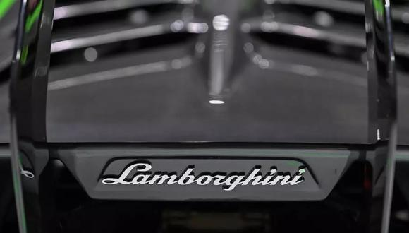

Iniciar Sesión
JULIO ALFREDO LARA SOSA
Mi Web Personal
NOTICIAS
Boom Supersonic apuesta a vuelos supersónicos comerciales

El sector de la aviación está en crisis, hay un impulso global para reducir las emisiones de
carbono, y muchos de nosotros no hemos pisado un avión o abrazado a nuestros seres queridos que
viven lejos en más de un año.
Revivir el sueño del viaje supersónico que murió con el retiro del Concorde hace casi dos décadas
parece, de entrada, una fantasía extravagante.
Pero ahora un nuevo grupo de empresas emergentes está trabajando en proyectos supersónicos e
hipersónicos. El pasado mes de octubre, la empresa Boom Supersonic fue la primera en lanzar un avión
de demostración en condiciones reales, el XB1.
CNN Travel se reunió con su fundador y CEO, Blake Scholl, para hablar de Overture, el avión
comercial de Mach 2,2 que quiere poner en el aire en 2026, y de los ambiciosos planes a largo plazo
de la empresa.
«O fracasamos o cambiamos el mundo», dice Scholl en una videollamada desde Denver, Colorado.
No ha habido ninguna aceleración importante en los tiempos de viaje desde la era del jet de los años
50 y 60, y su equipo espera cambiar eso.
«Esa barrera de tiempo es lo que nos separa. Creemos que es muy importante romper la barrera del
tiempo, más que la del sonido».
Diseñado con una capacidad de entre 65 y 88 personas, Overture se centrará en más de 500 rutas
principalmente transoceánicas que se beneficiarán de las velocidades de Mach-2,2 del avión, más del
doble que los aviones comerciales subsónicos actuales.
-CNN-
Lamborghini se compromete a fabricar automóviles totalmente eléctricos
En el 2023 presentará su primer modelo de producción híbrido y “a partir de
finales del 2024 toda la gama será electrificada”, anunció la prestigiosa marca.
El fabricante italiano de automóviles deportivos Lamborghini presentó este
martes “su hoja de ruta hacia la electrificación”, un ambicioso plan para lanzar el primer
superdeportivo completamente eléctrico a partir del 2025.
Para lograr ello realizará una inversión de más de 1,500 millones de euros (US$ 1,800 millones) en
cuatro años.En el 2023 presentará su primer modelo de producción híbrido y “a partir de finales del
2024 toda la gama será electrificada”, anunció la prestigiosa marca en un comunicado.
El primer Lamborghini completamente eléctrico estará listo para el 2025, precisó.
“Con el plan de electrificación, Lamborghini cambia rumbo, un paso necesario debido a que el
contexto ha evolucionado radicalmente y queremos contribuir con proyectos concretos a la reducción
del impacto sobre el medio ambiente”, comentó el presidente y director general, Stephan Winkelmann.
El “plan de transformación” de la marca será financiado con “la mayor inversión de la historia de
Lamborghini” y “nos permitirá alcanzar un futuro más sostenible”, añadió.
La primera fase (2021-2022) estará marcada por el desarrollo de motores de combustión interna
“destinados a rendir homenaje a la historia de la marca”.
El segundo paso, entre el 2023 y 2024, será dedicado a la transición híbrida de Lamborghini y se
estima que para finales del 2024 toda la gama estará electrificada.
El fabricante había presentado en el 2019 el superdeportivo Sian, el primer Lamborghini con
tecnología híbrida, con una producción de serie limitada.
La tercera fase será dedicada a los primeros Lamborghini “totalmente eléctrico”, con el objetivo de
“introducir un cuarto modelo en la gama en el futuro”, adelantó la marca.
El fabricante de automóviles de lujo también se comprometió a reducir sus emisiones de CO2 en un 50%
desde principios del 2025 en su planta de producción en Sant’Agata Bolognese, en el norte de Italia,
y garantizar “la sostenibilidad de las cadenas de suministro”.
Lamborghini resistió a la crisis económica provocada por la pandemia de coronavirus y alcanzó en
2020 su “segundo mejor año de la historia” en términos de ventas, junto con una rentabilidad
“récord”.
-Contenido de Gestión-